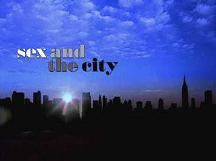

Todos hemos visto series, películas, y canciones de Nueva York. Pero definitivamente, de estos medios, la que más me ha dejado impacto, son las series. No hay nada como verse Sex and the City por tercera vez, no hay nada como repetirse Gossip Girl, no hay cosa que haya marcado la cultura general más que Friends, Mad Men, Seinfield, Law and Order. Esta ciudad es el origen de todo, la musa de Estados Unidos y el mundo